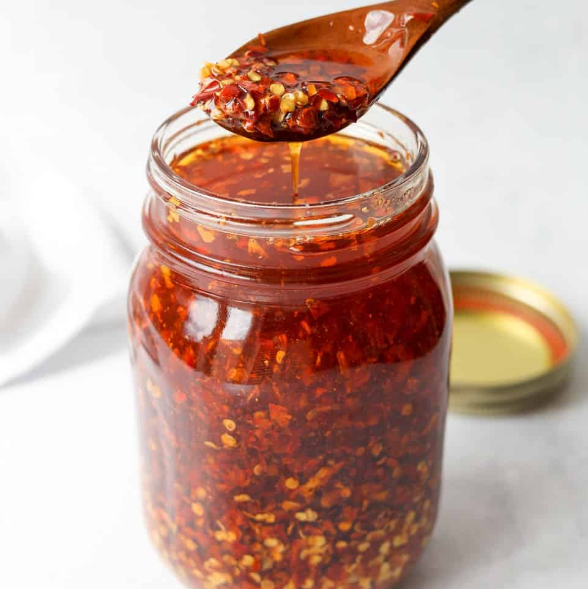

Chili Oil

If you are looking how to make chili oil, try this easy recipe made with everyday ingredients you might already have
in your pantry.
Ingredients
These are the simple-yet-flavorful ingredients you’ll need to make this
homemade chili oil recipe:
- Crushed red pepper: Start with three tablespoons of crushed red
pepper.
- Cinnamon stick and star anise: A whole cinnamon stick and a
whole star anise lend warm, spicy flavor.
- Szechuan peppercorns: Crushed Szechuan peppercorns add
earthiness, depth, and complexity.
- Garlic: Take the flavor up a notch with granulated garlic.
- Oil: Use a cup of any neutral oil as a base, such as peanut,
vegetable, or canola oil.
Steps
Here’s a brief overview of what you can expect when you make chili
oil:
- Combine all the ingredients (except the oil) in a heatproof bowl.
- Heat the oil in a saucepan.
- Pour the oil over the spices and let cool.
- Strain and store.